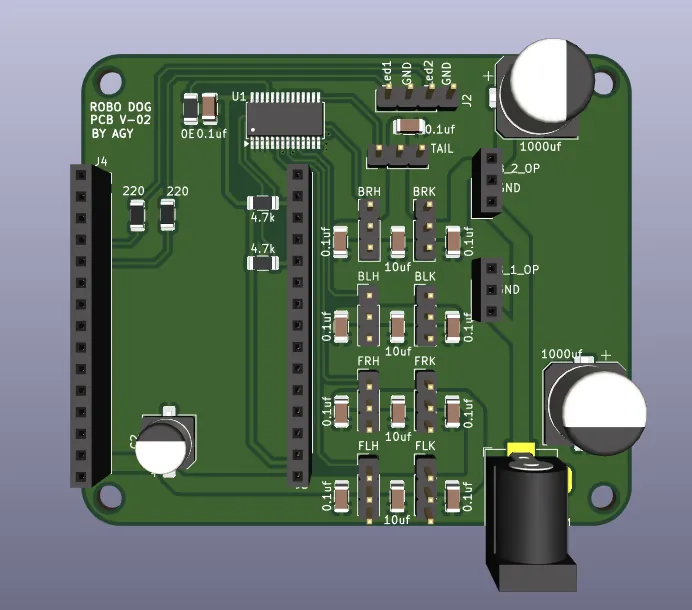

RoboDog — ESP32 Quadruped
Full-stack build, not just the board: a custom PCB routed in KiCad, an inverse-kinematics trot gait with diagonal leg pairing, 13 behavior animations, a WiFi web control interface, and the firmware split across both ESP32 cores with FreeRTOS so the gait engine never blocks on the web server.
ESP32KiCad / PCBFreeRTOSInverse KinematicsPCA9685
View repo ↗